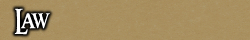

<TABLE BORDER CELLPADDING="0" background="bocimages/scrollbgdark.gif" width="100%">
	<TR>
	<!-- Header or whatever -->
	<BR>
		<TD valign="top" class="notes">
		<B><U>General Law</U></B><BR>
	      * The Baron shall always be referred to as 'My Lord', or 'My Liege'. <BR>
	      * Citizens must always bow upon meeting the Baron, and be "overly" polite, since 
		  any offence will result in imprisonment (he does rule them with an iron fist!)!<BR>
	      * Covian guardsmen must always salute superiors, and properly address them
	      (either 'Sir', or 'Ma'am'), or by their current rank and surname.<BR>
	      <P>
	     
	      <U><B>Cove Law</B></U> (Updated 19/08/08)
	      <P>
	     <u>Minor Crimes</u><br>
* <i>Littering</i> - Punishable by collecting the litter, and a fine of 100 gold.<br>
* <i>Brawling</i> - Punishable by jailing for 10 minutes.<br>
* <i>Public Intoxication</i> - Punishable by jailing until sober, confiscation of alcohol, and a fine of 100 gold upon release.<br>
* <i>Indecent Exposure</i> - Punishable by being ordered to cover-up appropriately, or removal from the area.<br>
* <i>Possession of Illegal Items (Nightshade, Necromancy Books, etc)</i> - Punishable by confiscation of said item(s) and a fine of 200 gold.<br>
* <i>Smuggling</i> - Punishable by confiscation of said item(s) and removal from the area.<br>
* <i>Premarital Sex</i> - Punishable by Church branding.<br>
* <i>Solicitation (Selling of self for prostitution in exchange for money)</i> - Punishable by Church branding.<br>
* <i>Refusal to Obey Authority</i> - Punishable by knocking after warning a second time with weapons drawn and presuming a battle stance.<br>
	      <P>
<u>Major Crimes</u><br>
* <i>Bribery</i> - Punishable by jailing for 30 minutes.<br>
* <i>Blackmail (Extortion through means of threats or violence)</i> - Punishable by jailing for 30 minutes and no less than 10 lashes.<br>
* <i>Burglary/Trespassing/Mugging/Theft</i> - Punishable by jailing for 30 minutes, no less than 10 lashes, and a fine of six times the stolen items worth (if applicable).<br>
* <i>Infiltration (Intentional spying on military operations)</i> - Punishable by jailing for 30 minutes, branding, and removal from the area. Trial may occur.<br>
* <i>Banditry/Highway Activities/Kidnapping/Slavery</i> - Punishable by jailing for 30 minutes, no less than 15 lashes, and removal from the area. Trial may occur.<br>
* <i>Piracy (Unlawful acts committed at sea)</i> - Punishable by trial.<br>
* <i>Common Assault (Assault upon a member of the public)</i> - Punishable by jailing for 30 minutes, no less than 20 lashes, and removal from the area.<br>
* <i>Assault on a Guardsman</i> - Punishable by knocking, jailing for 30 minutes, no less than 20 lashes, and removal from the area.<br>
* <i>Manslaughter (Death caused by accident or in self-defence)</i> - Punishable by trial.<br>
	      <P>
<u>Severe Crimes</u><br>
* <i>Wytchcraft</i> - Punishable by Church trial.<br>
* <i>Assault on an Officer/Official</i> - Punishable by trial.<br>
* <i>Assault on a Clergyman</i> - Punishable by Church trial.<br>
* <i>Attempted Murder</i> - Punishable by trial.<br>
* <i>Murder</i> - Punishable by trial.<br>
* <i>Treason (Publically defacing the Baron, or going absent without leave)</i> - Punishable by trial.<br>
* <i>Heresy (Publically defacing anything associated with the Church)</i> - Punishable by Church trial.<br>
<p>
<u>Other Crimes</u><br>
* <i>Conspiracy (Being revealed to be conspiring to commit crime)</i> - Punishable by the punishment listed for the crime which was being conspired to commit.<br>
* <i>Aiding and Abetting (Perverting the cause of justice via providing incorrect information, or being known to have assisted a criminal in any way)</i> - Punishable by the same punishment offered to the criminal the individual was assisting.<br><br>
<p>
		</TD>
	</TR>
</TABLE>
